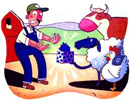
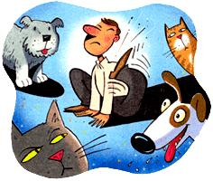
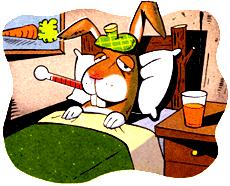

Getting more than you bargained
for from your pets or livestock.
When a group of veterinarians get together, it is always an entertaining experience. Lengthy, colorful recountings of unusual cases abound, and inevitably the descriptions get more dramatic with each telling. This year's national veterinary conference promised to be no exception. I'd arrived less than an hour earlier at the popular Colorado ski resort hosting the event. The other large-animal veterinarians milling around the hotel lobby had been easy to spot: Justin boots, cowboy hats and Carhartt overall looked out of place among the shiny ski suits and furry apres-ski booties. I'd promptly found my way to a room advertising a roundtable discussion entitled "Public Health and Zoonotic Disease."
Zoonotic diseases are those transmitted from animals to humans. Worldwide, they are a serious problem, especially in developing countries with less than ideal sanitary conditions. But the United States too, has its share of zoonotic troubles, which are only exacerbated by the increase in immunosuppressive diseases like AIDS.
Since many physicians may not be especially familiar with zoonotic diseases, veterinarians need to be ever vigilant in spotting signs and symptoms. Fortunately, Dr. Bill and the other vets gathered for the discussion were only too happy to recall their more dramatic cases. I pulled out a pad and pen and scribbled a few notes.
Dr. Bill went on to describe how the roundworm got into the boy's eye. It turns out that most puppies and kittens are born with or soon acquire roundworms. When the young dogs or cats shed the eggs of the roundworm in their feces, the eggs can encyst in the soil for years. Dirt-eating toddlers eagerly scoop up the parasite-infested dirt and swallow the cysts. The reactivated eggs hatch into immature roundworms that migrate throughout the body, somehow ending up in the ocular fluid. The sight of one of these roundworms wriggling across the anterior chamber of the eye is unforgettable.
The tale of the migrating roundworm in the toddler's eye (called visceral larval migrans, or VLM) prompted a discussion of strategies to prevent transmission to humans. The two main strategies are aggressive deworming of all puppies and kittens, starting at three weeks of age, and discouraging toddlers from spending time on ground where dogs and cats defecate. Obviously, good hygiene is also a must. I certainly planned to wash my hands the next time I vaccinated a puppy just before lunch.
Everyone at the discussion felt like scratching after hearing a Florida vet describe the case of a plumber who developed a rash resembling a network of train tracks across his back. The unlucky man had been working shirtless while doing a remodeling job in the crawl space of a house.
Unfortunately, some neighborhood stray dogs had access to the crawl space and used it as their bathroom. The soil was infected with hookworm larvae, which are commonly found in the stool of young dogs.
The hookworms gained entry into the unsuspecting plumber's back and began happily tunneling under and across his skin, causing a condition called cutaneous larval migrans, or CLM. Hookworm, like roundworm, is best avoided through aggressive deworming of all puppies and kittens. You also may want to think twice before working shirtless in crawl spaces frequented by stray cats and dogs.
The next time you think about cooling off in the of water hole, remember this story. A vet from the eastern plains area of Colorado was called to look at some cows that had an unusually high spontaneous abortion rate. By the time he had diagnosed leptospirosis, some kids from the nearby ranches who'd gone swimming in ponds used by the cows had gotten quite sick.
Three out of four of the kids were running high fevers and had chills, muscle pains and conjunctivitis. The water was contaminated with the Leptospira bacteria, a corkscrew-shaped microorganism shed in the urine of infected cows. It can gain entry into humans through any break in the skin.
Affected cattle will suffer not only increased spontaneous abortions, but inflammation of the udder, or mastitis; they need to be isolated from other cows. In some herds, twice-yearly vaccinations can keep the disease under control. To be safe, people should avoid direct contact with water where domestic animals are suspected to urinate.
Not to be outdone, an Iowa veterinarian described a psittacosis outbreak among a group of poultry workers on a turkey farm. Psittacosis is a bacterial infection that causes diarrhea and respiratory problems in birds. Humans can become infected through contact with the aerosolized fecal material of birds that shed the organisms.
In this case, a flock of turkeys was moved into a more crowded poultry house, became stressed and began shedding the organism. Several of the poultry workers developed a cough, fever and headaches. Fortunately, infection in man is usually not fatal, although it can cause permanent damage to the valves of the heart.
Pet birds such as parakeets, parrots and cockatiels also can carry the disease, as can wild and domestic pigeons. Tetracycline works well to prevent and treat psittacosis in birds and man. A fecal test will show if your pet parrot or parakeet is a carrier.
Another veterinarian, who also happens to be a rabbit hunter, chimed in with a zoonotic experience of his own. About three days after skinning and gutting several cottontail rabbits, he developed swollen lymph nodes, fever and chills. A small cut on his arm had become very red and painful.
It happened that one of the rabbits was infected with tularemia, or rabbit fever, a fairly common bacterial infection among wild rabbits and other small, ground-dwelling mammals. It can be passed to humans by direct contact, through airborne transmission or through a tick bite. The vet had picked up the infection through the cut on his arm.
Fortunately, his case was diagnosed quickly and responded to antibiotics. He's now careful to wear gloves when handling wild rabbits.
Sheep also get tularemia, likely from ticks that are infected by wildlife.
Next, I recounted my own tale to the group. Veterinarians are by definition at higher risk for zoonotic disease. Take the case of my friend "Hutch," a veterinarian in Colorado for more than 50 years. He has vaccinated thousands of cows for brucellosis, so it is not surprising that he stuck a needle into his own skin once or twice while trying to inject an unruly heifer with strain 19.
Brucellosis is primarily a disease of cattle and swine in the United States. In cattle, brucellosis can cause an "abortion storm" in a herd. In humans, brucellosis is called undulant fever; people can contract the disease from direct contact with aborted animal tissues or from drinking unpasteurized milk or eating cheese from infected cows.
My friend Hutch broke out with fevers and chills, sweating and generalized joint pain. It got so bad, he ran his vet truck off the road and suffered a serious eye injury. When he finally figured out what was causing his sickness, he was successfully treated with antibiotics.
Although brucellosis can be transmitted to humans, there are fewer than 100 cases a year reported in the United States. Transmission between other species is questionable, though in at least one case a group of brucellosis-positive cows were penned up with some Yellowstone bison for several months, and none of the bison became infected.
"I've got a story that will outdo any of these," bragged a veterinarian from Montana. He had been called out to a dude ranch to investigate the sudden death of a horse. As he examined the animal, the veterinarian noticed an alarming sore on the owner's arm. It was a circular black lesion, with a blistered area in its center. "My God, that looks like an eschar!" exclaimed the veterinarian.
An eschar is a characteristic skin lesion that occurs after contact with the spore producing bacterium, Bacillus anthracis. Anthrax spores are shed by dead and dying animals and last in the environment for years. Humans usually acquire the disease occupationally - working with imported wool products, especially from the Middle East.
After a little investigation, this veterinarian concluded that the dead horse had contracted the infection from a new goatskin saddle that had been imported from Afghanistan. The horse had worn the saddle repeatedly; it had also been recently bitten by numerous flies, which created an entry wound for the spores. The owner, too, had picked up anthrax from handling the saddle.
Once again, antibiotics came to the rescue. But had the veterinarian failed to make this critically important diagnosis, the bacteria could easily have spread into the dude rancher's bloodstream, with fatal consequences.
The dead horse was buried deep, which is the only way to dispose of an anthrax-infected carcass.
Outbreaks of anthrax are known to have occurred when developers' bulldozers have unearthed a carcass years after it was buried, releasing spores into the environment.
There were other zoonotic diseases discussed, including a case of severe diarrhea that a dairy worker picked up from some calves infected with an internal parasite called Cryptosporidium.
Mentioned, too, were scabies, mites and fleas, all well-known sources of unpleasant skin rashes and itching. Good parasite control programs for small and large animals will keep these critters at bay.
In another instance, a sheepherder on a Navajo Indian reservation became infected with tapeworms after his sheepdog devoured some infected sheep offal and passed the parasite along in its stool.
More alarmingly, a man died of the plague last year in Colorado after a stray cat sneezed on him as he tried to catch the animal in the crawl space of his house. The cat had been spending time around a nearby prairie dog colony and had become infected from a flea. Infected cats usually have very swollen lymph nodes under their jaws.
I squirmed some at these tellings and suddenly found myself wanting to rush to the restroom to scrub my hands. But a lively discussion of rabies kept me riveted. Since, however, I've already exhausted that subject in a past article ("Rabies: An Old Disease Revisited," MEN July/August 1999), I'll spare you the details here.
A vet from Iowa told of his experience with a tiny, intracellular parasite called Toxoplasma. Cats are often infected with toxoplasmosis, a disease caused by Toxoplasmas, which, when passed to adults, generally goes undetected. In infants and developing fetuses, however, it can cause severe central nervous system damage and other serious birth defects. Cats pick up toxoplasmosis from eating raw or undercooked meat, or from hunting infected birds and rodents. Up to 40% of stray cats are infected. It is, however, often difficult to diagnose infected cats, since few show signs of disease and the Toxoplasma spores are shed only intermittently in a cat's feces.
To avoid toxoplasmosis, keep stray cats out of gardens and sandboxes and wear gloves when working in the soil. Pregnant women are also advised to leave litter box cleaning duties to another family member.
The discussion finally got round to the granddaddy of zoonotic diseases, bovine spongiform encephalopathy (BSE), more commonly known as mad cow disease. Since the outbreak began, tens of thou sands of bovine carcasses have been incinerated in England. Not previously thought to be transmissible to man, BSE is now classified as a zoonotic disease. Over the past several years, numerous Brits have been diagnosed with the human equivalent of mad cow disease, known as Creutzfeldt Jakob Disease (CJD). It is debilitating and inevitably fatal.
All of these victims lived in England and had eaten beef, most probably infected with BSE. A big mystery with BSE is the mode of transmission: There is no virus, bacteria or parasite - only a mysterious protein particle known as a prion. How prions divide and are transmitted is largely unknown. The infective prions multiply and eat away at portions of the brain, leaving a sponge-like mass (hence the term "spongiform"). Because it is very slow to develop (it may take several years), many people in England may be incubating the disease.
To avoid mass hysteria, little is said in the U.S. about the zoonotic nature of mad cow disease. However, Americans who have visited England recently are not permitted to give blood transfusions, nor are blood transfusions acceptable from anyone that may have received injections of growth hormone of bovine derivation.
To date, there have been no cases of BSE diagnosed in the U.S., but it remains a cause for serious concern. If and when a cow in the United States is diagnosed with BSE, the American beef industry will likely be affected.
By the time the roundtable discussion wrapped up, my head was throbbing as if it had holes in it. All this talk of migrating roundworms, diarrhea-causing bacteria and brain-eroding prions had set me back.
I realized I hadn't eaten all day. I noticed the hotel restaurant was touting a London broil steak for the dinner special. Why not? I thought, as I eagerly weaved my way through the throng of apres-skiers.
Related info:
How to Prevent Zoonotic Disease
Zoonotic Diseases
|
 |
|
 |
|
 |
|
|